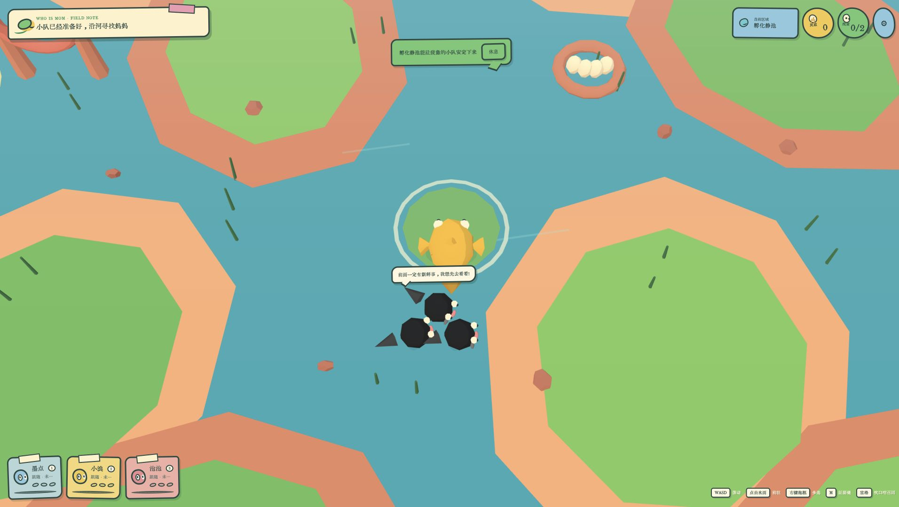

WHO IS MOM / PROJECT STORYAI AGENT · MEMORY · MYSTERY
寻找的不是妈妈，
是被记忆改写的真相。
三只小蝌蚪带回三种理解。玩家沿着来源、语境与遗忘的痕迹，让不完整的认知逐渐靠近同一个答案。
戴荷叶帽的青蛙
也可能在暖泥滩

DIRECTION C · 01
三只小蝌蚪带回三种理解。玩家沿着来源、语境与遗忘的痕迹，让不完整的认知逐渐靠近同一个答案。
